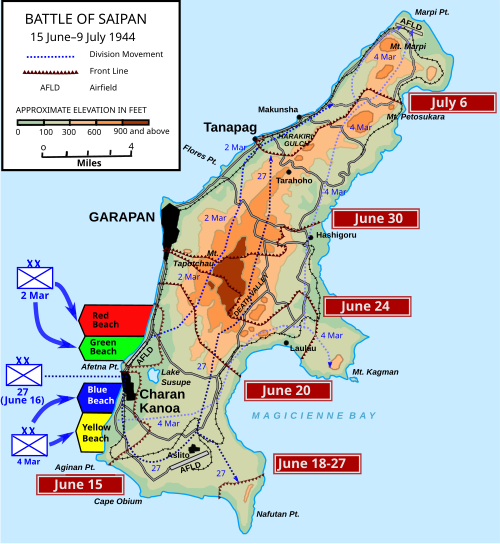
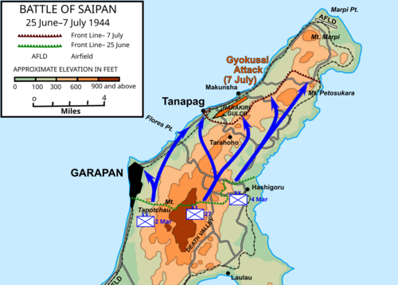

Date
June 15 – July 9, 1944
Location
Mariana Islands
Result
American Victory
Overview
Known as the "D-Day of the Pacific," this battle breached the inner defense line of the Japanese Empire.
| Faction | Commanders | Casualties |
|---|---|---|
| united States of America | Holland Smith] | ~3,426 killed |
| Japan | Yoshitsugu Saito | ~24,000 killed (almost 100%) |


The Conflict
The Battle of Saipan was an amphibious assault launched by the United States against the Empire of Japan during the Pacific campaign of World War II between 15 June and 9 July 1944. The initial invasion triggered the Battle of the Philippine Sea, which effectively destroyed Japanese carrier-based airpower, and the battle resulted in the American capture of the island. Its occupation put the major cities of the Japanese home islands within the range of B-29 bombers, making them vulnerable to strategic bombing by the United States Army Air Forces. It also precipitated the resignation of Hideki Tōjō, the prime minister of Japan.
Saipan was the first objective in Operation Forager, the campaign to occupy the Mariana Islands that got underway at the same time the Allies were invading France in Operation Overlord. After a two-day naval bombardment, the U.S. 2nd Marine Division, 4th Marine Division, and the Army's 27th Infantry Division, commanded by Lieutenant General Holland Smith, landed on the island and defeated the 43rd Infantry Division of the Imperial Japanese Army, commanded by Lieutenant General Yoshitsugu Saitō. Organized resistance ended when at least 3,000 Japanese soldiers died in a mass gyokusai attack, and afterward about 1,000 civilians committed suicide.
The capture of Saipan pierced the Japanese inner defense perimeter, and forced the Japanese government to inform its citizens for the first time that the war was not going well. The battle claimed more than 46,000 military casualties and at least 8,000 civilian deaths. The high percentage of casualties suffered during the battle influenced American planning for future assaults, including the projected invasion of Japan.
Significance & Aftermath
- The invasion of Saipan and the invasion of France in Operation Overlord demonstrated the dominance of American industrial power. Both were massive amphibious invasions—the two largest up to that time—and they were launched almost simultaneously on separate halves of the globe. Together, they were the greatest deployment of military resources by the United States at one time. Because the Battle of Saipan began just over a week after the 6 June landings for Overlord, its importance has often been overlooked, but just as Overlord was a major step in contributing to the fall of the Third Reich, Saipan marked a major step in the collapse of the Empire of Japan.